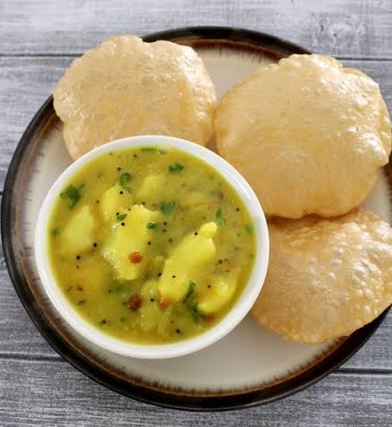
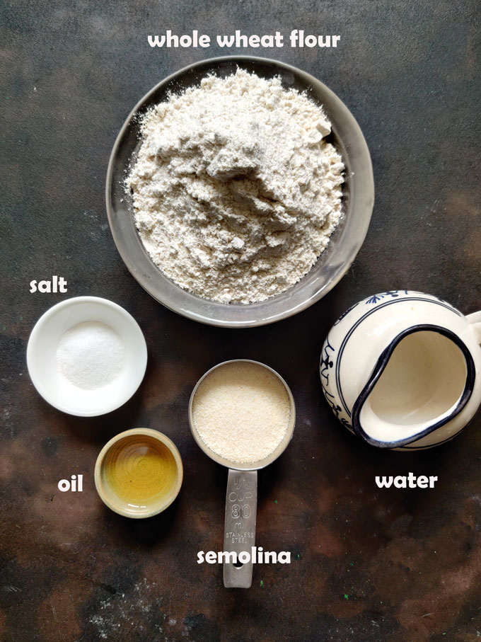
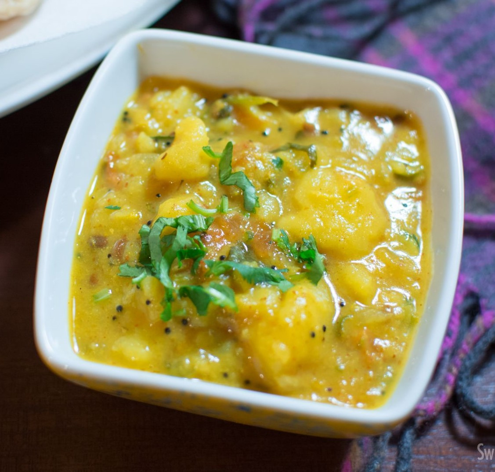

 Poori Sagu is a popular South Indian dish that combines deep-fried bread (poori) with a flavorful and aromatic vegetable curry (sagu). This dish has a rich history and is deeply rooted in the culinary traditions of South India. The origins of Poori Sagu can be traced back to Karnataka, a state in South India known for its diverse and delectable cuisine. It is believed that Poori Sagu has its roots in the traditional Kannadiga cuisine, where it was initially prepared as a breakfast or festive dish. Over time, it has spread to other South Indian states and become a beloved dish in households and restaurants alike. The dish consists of pooris, which are small, round unleavened bread made from wheat flour and deep-fried until they puff up. The pooris are often golden brown and have a crispy texture. Sagu, the accompanying curry, is a delightful blend of vegetables, spices, and coconut milk. Common vegetables used in sagu include potatoes, carrots, beans, peas, and sometimes even aubergines. The combination of these vegetables creates a hearty and wholesome curry that complements the light and fluffy pooris. The flavor profile of Poori Sagu is a harmonious balance of spice, sweetness, and creaminess. The curry gets its rich taste from a blend of aromatic spices such as cumin, coriander, and mustard seeds. Coconut milk adds a creamy texture and a subtle sweetness to the dish, while the vegetables contribute their distinct flavors. The pooris, with their crispy exterior and soft interior, provide a perfect vessel for scooping up the flavorful sagu.
Poori Recipe

Ingredients Required
1 cups whole wheat flour - 360 grams
0.33 teaspoon oil or melted ghee (optional)
0.33 teaspoon salt or add as required
0.25 to 0.33 cup water or add as required
oil for deep frying - as required
Instructions
1) Making Dough
In a mixing bowl or on your work-surface, take the whole wheat flour, salt and oil or melted ghee.
Add little water at a time and knead well to form a dough. The dough should not be soft but stiff and tight. You can also make a semi-soft dough.
2) Assembling And Rolling
Divide the dough into small or medium pieces - about 25 to 30
Make into medium sized or slightly small balls.
Spread a bit of oil on both sides of the dough ball. Spreading oil and not dusting with flour helps the oil to stay clean and you won’t see dark burnt flour particles inside the oil.
Roll the dough evenly into circles of about ¼ inch - neither too thin nor thick.
Place the rolled poori in a plate and cover with a clean kitchen towel, so that they don't dry up.
3) Frying
Heat oil in a deep frying pan or kadai.
When the oil is sufficiently hot then add one poori at a time and fry gently pressing down with the frying spoon or slotted spoon in a circular motion.
Turn over when puffed up and fry till golden brown.
Serve poori hot with a vegetable curry like korma or sweet dishes like suji ka halwa or aamras or potato curry.
Sagu Recipe

Ingredients Required
1.5 tablespoons oil
0.38 teaspoon mustard seeds
0.38 teaspoon jeera(cumin) seeds
0.75 teaspoon split urad dal
0.75 teaspoon chana dal
0.75 teaspoon ginger grated
1.5 green chilies finely chopped
0.75 stalk curry leaves
0.75 pinch hing (asafoetida)
0.75 large onion roughly chopped
0.38 teaspoon turmeric powder
salt to taste
1.5 tablespoons roasted chana dal (putani) or besan
1.13 cups water
1.5-2.25 medium boiled potatoes mashed
0.75 teaspoon coriander powder
juice of half lime
1.5 tablespoons coriander leaves
Instructions
Wash and pressure cook potatoes for 2 whistles or use an Instant Pot to boil the Potatoes.
Take 2 tablespoons of roasted chana dal or roasted bengal gram in a blender. Grind them into a fine powder.
Heat oil in a pan/kadai. Once the oil is hot, add mustard seeds, cumin and let them splutter
Then add urad dal, chana dal, and saute till the dals become light brown.
now add all the veggies of your choice and cook with some salt and water. you can even pressure cook them if you want.
cooking veggies takes atleast 10 minutes.
furthermore, add the masala paste prepared previously.
mix and allow it to boil well for 5 minutes. the raw smell of coconut has to disappear.
in addition, add water to get the desired consistency.
 South Indian Recipes
South Indian Recipes